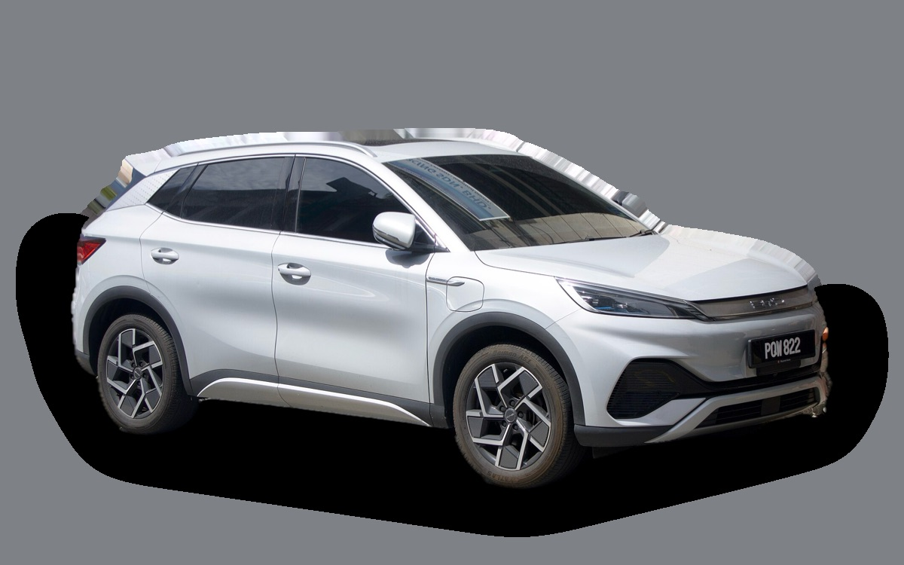
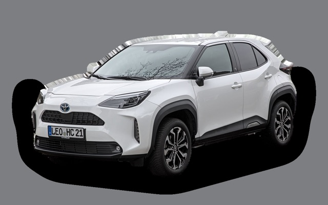

What does a BYD Atto 3 cost per month?
A 2023 BYD Atto 3 costs about SEK 2,571 a month, all in.
SEK 2,571per month, 2023 model
SEK 263,000price, 2023 model
SEK 474,900new from
Bvalue grade (2023)


Monthly cost by model year
| Model year | Version in the calculation | Price | Per month | Grade |
|---|---|---|---|---|
| 2026 | 60 kWh, Comfort | SEK 474,900 | SEK 5,357 | D |
| 2023 | 60 kWh, Comfort | SEK 263,000 | SEK 2,571 | B |
Based on 5 years of ownership and 12,500 km a year, with fuel prices from 2026-10-22. The monthly cost includes depreciation, fuel, servicing and repairs, insurance and road tax.
How the cost splits for a 2023 car
- Depreciation: SEK 1,232/mo
- Fuel: SEK 400/mo
- Servicing and repairs: SEK 258/mo
- Insurance: SEK 650/mo
- Road tax: SEK 30/mo
Used prices in ads
| Model year | Median price | Ads | Typical mileage |
|---|---|---|---|
| 2023 | SEK 259,900 | 8 | 43,000 km |
| 2022 | SEK 259,900 | 36 | 48,000 km |
The median price in Swedish ads by model year in October 2026 (source: BilKoll). Ad prices are asking prices, and the final price may be lower.
Engines and versions
| Engine | Fuel | Power | 0–100 km/h | Consumption (WLTP) | Range | Model years | Extra cost |
|---|---|---|---|---|---|---|---|
| 60 kWh | Electric | 204 hp | 7.3 s | 15.6 kWh/100 km | 420 km | 2022– | – |
- Trim: Comfort, Design (+SEK 20,000)
Facts
- Body
- SUV
- Model years
- 2022–
- New from
- SEK 474,900
- Boot
- 440 litres
- Euro NCAP
- 5 of 5 stars
- New-car warranty
- 6 years
- Reliability
- 3 of 5
- Comprehensive insurance, estimate
- SEK 9,300/yr
- Servicing, estimate
- SEK 2,300/yr
Pros and cons
Pro
Lots of equipment for the money and a six-year warranty.
Con
Loses a lot of value, and the brand is new in Sweden.
Similar cars

Toyota Yaris CrossSEK 2,783/mo as a 2023 model Renault CapturSEK 2,980/mo as a 2023 model
Renault CapturSEK 2,980/mo as a 2023 model Suzuki VitaraSEK 3,137/mo as a 2023 model
Suzuki VitaraSEK 3,137/mo as a 2023 model Volkswagen T-CrossSEK 3,187/mo as a 2023 model
Volkswagen T-CrossSEK 3,187/mo as a 2023 model Skoda KamiqSEK 3,200/mo as a 2023 model
Skoda KamiqSEK 3,200/mo as a 2023 model Toyota bZ4XSEK 3,270/mo as a 2023 model
Toyota bZ4XSEK 3,270/mo as a 2023 model
Updated 2026-10-29 · ad data Oct 2026